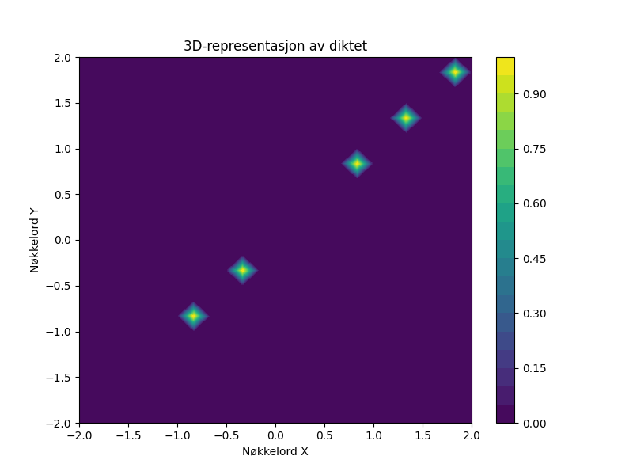

En rusten kjele i hagen står, der regnet faller og tiden går. Den drømmer om supper og varme kvelder, mens mosen vokser og vinden svelger.

import matplotlib.pyplot as plt
import numpy as np
# Dikt
dikt = """
En rusten kjele i hagen står,
der regnet faller og tiden går.
Den drømmer om supper og varme kvelder,
mens mosen vokser og vinden svelger.
"""
# Konvertere diktet til en liste av nøkkelord
keywords = dikt.lower().split()
# Beregne frekvensen av nøkkelordene
word_counts = {}
for word in keywords:
if word in word_counts:
word_counts[word] += 1
else:
word_counts[word] = 1
# Lag en scatter plot av nøkkelord og deres frekvenser
plt.figure(figsize=(10, 6))
x = list(word_counts.keys())
y = list(word_counts.values())
plt.scatter(x, y, s=100)
plt.xlabel("Nøkkelord")
plt.ylabel("Frekvens")
plt.title("Nøkkelordfrekvens i diktet")
plt.grid(True)
plt.savefig(output_path)
# Lag en 3D-plot av en enkel flate som representerer diktet
# Bruk nøkkelordene som x, y og z koordinater
num_words = len(keywords)
x = np.linspace(-2, 2, num_words)
y = np.linspace(-2, 2, num_words)
X, Y = np.meshgrid(x, y)
Z = np.zeros_like(X)
for i in range(num_words):
if "regnet" in keywords[i]:
Z[i, i] = 1
if "tiden" in keywords[i]:
Z[i, i] = 1
if "varme" in keywords[i]:
Z[i, i] = 1
if "vinden" in keywords[i]:
Z[i, i] = 1
if "mosen" in keywords[i]:
Z[i, i] = 1
plt.figure(figsize=(8, 6))
plt.contourf(X, Y, Z, 20, cmap='viridis')
plt.xlabel("Nøkkelord X")
plt.ylabel("Nøkkelord Y")
plt.title("3D-representasjon av diktet")
plt.colorbar()
plt.savefig(output_path)execution_ok=True fallback_used=False image_ok=True